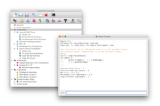

19 December 2016: Regina 5.1 is out! This comes with a major overhaul for Python and C++ users. This follows version 5.0 from September, which added 4-manifolds, normal hypersurfaces, tree decompositions and more. Packages are available for MacOS, Windows and GNU/Linux, and there are also customised versions of Regina for the iPad and Sage. You can read more about what's new, or go ahead and download the new version.
15 November 2016: Regina has moved! It now lives at regina-normal.github.io. Please update your bookmarks accordingly.
17 October 2016: Mac users can now get Regina from the Mac App Store (for free, of course). There are minor differences between the App Store version and the direct download; see the download section for details.
5 September 2016: An issue has been found in Regina 4.94–4.96 that affects programmers who enumerate normal surfaces directly in C++. See the bugs page for a discussion and a workaround.
For 3-manifolds, it includes high-level tasks such as 3-sphere recognition, connected sum decomposition and Hakenness testing, comes with a rich database of census manifolds, and incorporates the SnapPea kernel for working with hyperbolic manifolds. For 4-manifolds, it offers a range of combinatorial and algebraic tools, plus support for normal hypersurfaces.
Regina comes with a full graphical user interface, as well as Python bindings and a low-level C++ programming interface.
See the users' handbook for a full list of features.
|
Studying 3-manifold triangulations |
|
Normal surfaces and angle structures |
|  | In-built Python scripting |
Regina is available for Mac, Windows, GNU/Linux, iPad, and Sage.
If you encounter any problems when you run Regina, you can check the
troubleshooting page to
see if your problem is discussed there. You also most welcome
to contact us for help.
Mac
You have two options for Mac: either download direct from this website, or from the Mac App Store. If you're not sure, then try using the Mac App Store.
MacOS Version Direct Download Mac App Store Sierra (10.12)
El Capitan (10.11)
Yosemite (10.10)
Mavericks (10.09)Download from the
Regina website
There are some minor differences between the two versions. The Mac App Store version:
Sandboxing is a security measure that comes with the Mac App Store: it ensures that apps only access files that users themselves choose through the MacOS graphical file dialogs (Open, Save, etc.). For Regina, this means that when you open a Python console through the graphical user interface, you cannot access arbitrary files using Python commands. If this causes you difficulties, then remember:
Windows Version Installer Windows 10
Windows 8
Windows 7Download
Notes for Windows:
To keep the installation simple, most packages do not include the MPI (high-performance computing) utilities. If you need these, let Ben know and he can build you an MPI-enabled package.
Distribution Version 32-bit package (i386 or i586) 64-bit package (amd64 or x86_64) Debian 8.x (jessie) Install Install unstable (sid) Install Install Fedora 24 Download Download 23 Download Download Mageia 5 Download Download openSUSE Leap 42.2 n/a Download Leap 42.1 n/a Download 13.2 Download Download Ubuntu 16.10 (yakkety) Install Install 16.04 LTS (xenial) Install Install 14.04 LTS (trusty) Install Install
For older versions of GNU/Linux:
For newer versions of GNU/Linux:
For other GNU/Linux distributions:
iOS Version Installer iOS 8 and above
Sage Version Installer Any Instructions
Of course, whilst the packages are written to work with any modern version of Sage, your experiences might vary (particular with an older Sage and/or operating system). Follow the instructions link above for details.
You can read the handbook from within Regina by selecting Help → Regina Handbook from the menu. You can also read it here online.
You can read the API documentation by selecting Help → Python API Reference from the menu. You can also read it here online.
Many others have been of assistance with this project, be it through time, knowledge, testing or code. Please see the full list of acknowledgements in the users' handbook.
Benjamin A. Burton, Ryan Budney, William Pettersson, et al.,Or, in BibTeX:
Regina: Software for low-dimensional topology,
http://regina-normal.github.io/, 1999–2016.
@misc{regina,
author = {Benjamin A. Burton and Ryan Budney and William Pettersson and others},
title = {Regina: Software for low-dimensional topology},
howpublished = {{\tt http://\allowbreak regina-normal.\allowbreak github.\allowbreak io/}},
year = {1999--2016}}
This program is free software; you can redistribute it and/or modify it under the terms of the GNU General Public License as published by the Free Software Foundation; either version 2 of the License, or (at your option) any later version.
Some of this code comes with additional permissions, which allow it to be distributed through online repositories such as Apple's App Store or Google Play. See the full license in the users' handbook for details.
This program is distributed in the hope that it will be useful, but WITHOUT ANY WARRANTY; without even the implied warranty of MERCHANTABILITY or FITNESS FOR A PARTICULAR PURPOSE. See the GNU General Public License for more details.
You should have received a copy of the GNU General Public License along with this program; if not, write to the Free Software Foundation, Inc., 51 Franklin St, Fifth Floor, Boston, MA 02110-1301, USA.
For complete license details, including the full GNU General Public License and information on external software that Regina uses, see the full license in the users' handbook.
If you have written your own extensions that you think could be worth putting in the main release, please do write and let us know.
Even if you have no comments to make, it's always nice to hear from people using Regina, even if it's just to say hi. We're always interested to hear how this software is being used.
You can contact us by email: our websites are linked to our names in the author list above.


{kind=link}